地政学
マラボはビオコ島北岸にあり、本土から離れた旧首都として海上交通、油田、政権中枢の記憶を抱えます。二〇二六年の首都移転後も、ギニア湾を見張る島の行政拠点として重要です。海峡の距離が政治の感覚も変えます。
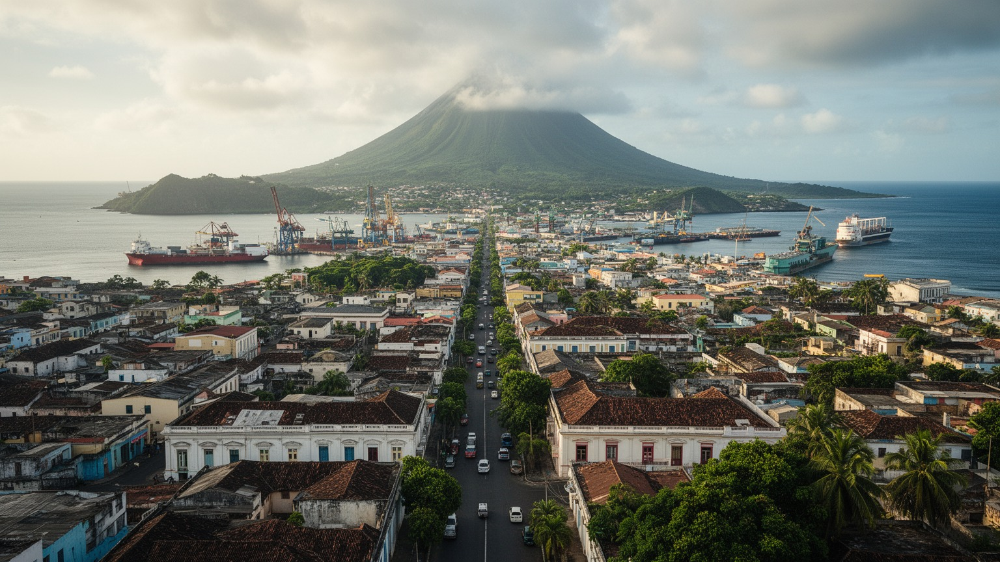
🇬🇶 赤道ギニア / ビオコ島 / World City Atlas
ギニア湾の火山島ビオコ北岸にある旧首都です。港、行政機関、石油ガス関連の拠点、スペイン植民地期の街並み、島の森と海風が、赤道ギニアの島嶼側の重心を作っています。
都市の骨格
マラボは本土ではなくビオコ島にあります。旧首都として行政の記憶を抱え、港と空港、沖合油田、植民地期の街路、島の山地を結びながら、ギニア湾の政治経済を読み解く入口になります。
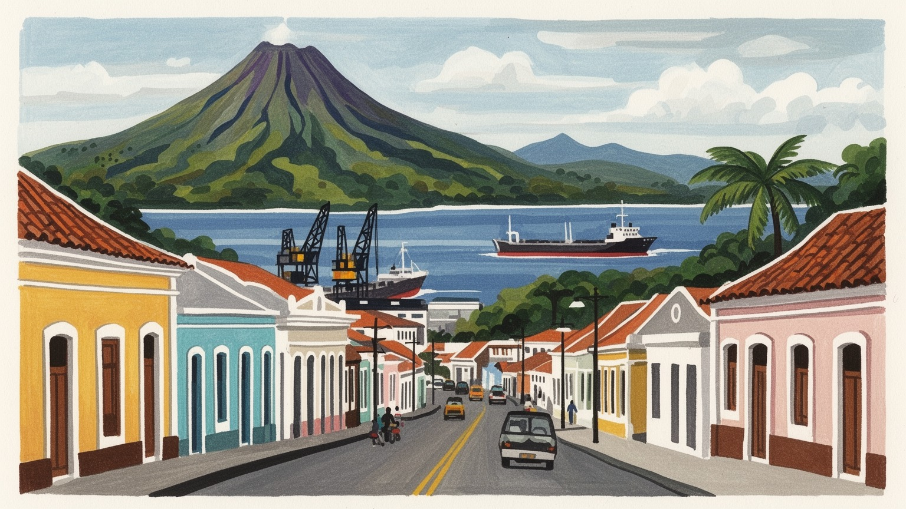
マラボはビオコ島北岸にあり、本土から離れた旧首都として海上交通、油田、政権中枢の記憶を抱えます。二〇二六年の首都移転後も、ギニア湾を見張る島の行政拠点として重要です。海峡の距離が政治の感覚も変えます。
石油ガス、港湾、空港、行政、建設、商業、ホテルが雇用を支えます。沖合資源の収入は都市を変えましたが、若者の仕事、物価、輸入依存、技能訓練の課題も残りますね。港の仕事は家計と街の物価にも直結します。
スペイン語圏アフリカの都市として、カトリック教会、ブビの島文化、ファン系住民、移民の言葉、音楽、食が交差します。大聖堂や広場だけでなく、市場と家族行事が文化を保ちます。複数の祈りが近所を結びます。
港の近くの旧市街、海岸道路、市場、学校、行政窓口が日常の舞台です。観光では大聖堂、植民地建築、ルバ方面の海、バシレ山の森を組み合わせ、島の湿った空気を歩きます。雨の合間の散歩も街の大きな魅力です。
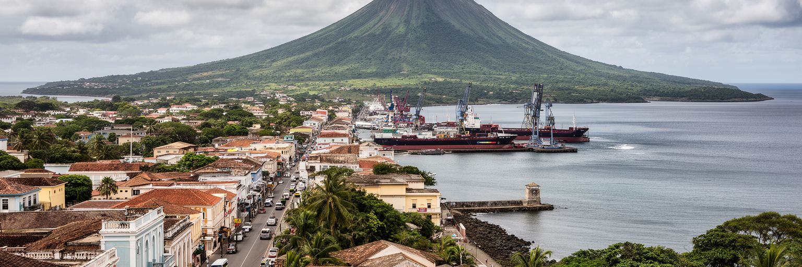
マラボの第一の特徴は、赤道ギニアの本土ではなく、カメルーン沖に浮かぶビオコ島北岸にあることです。旧首都でありながら国土の大部分から海を隔てる位置は、都市の政治的な意味を複雑にしました。港と空港は本土、カメルーン、ナイジェリア、スペイン語圏との接点になり、島の行政機能はギニア湾の海上秩序と強く結びつきます。二〇二六年一月二日に首都がシウダ・デ・ラ・パスへ移った後も、マラボは大統領府、旧官庁街、外交施設、石油ガス関係者の滞在地として長い首都時代の記憶を残しています。島に置かれた首都は外部から守りやすい一方、国内の本土住民には遠い中心でもありました。その距離感は、首都移転の理由を考えるうえで欠かせません。マラボを歩くと、海に開いた都市という性格と、国家を島から統治してきた歴史が同時に見えます。港湾、軍事、行政、国際企業の事務所が狭い市域に重なり、都市は小さいながら国家の権力と資源経済を濃く映します。旧首都になった現在も、ビオコ島の人口、交通、教育、医療を支える中心であり、赤道ギニアを本土だけで理解できないことを教える場所です。フェリーや航空便の本数、港の通関、島内道路の状態は、国家の大きな政治判断を住民の暮らしへ翻訳する実務です。海で隔てられた都市だからこそ、接続をどう保つかが自治と生活の質を決めます。
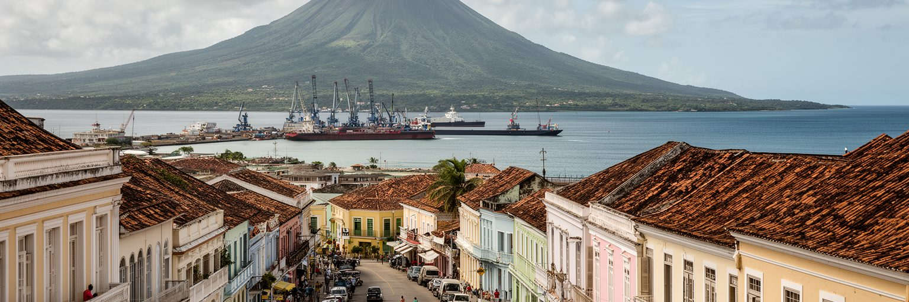
マラボは長く赤道ギニアの首都として扱われてきましたが、二〇二六年一月二日に本土内陸のシウダ・デ・ラ・パスへ首都機能が移されました。この変化は、地図上の名称変更だけではなく、島に偏っていた国家中枢を本土へ移す政治的な意思を示します。ただし、首都移転でマラボの重要性がすぐ消えるわけではありません。旧首都には省庁関連の建物、外交の記憶、ホテル、国際企業の事務所、空港、港湾、行政経験を持つ人材が残ります。新首都が実際にどこまで機能を吸収できるかは、住宅、学校、病院、通信、道路、職員の生活条件に左右されます。マラボ側では、旧首都としての空白をどう埋めるかが課題になります。政治の中心が動くと、出張、許認可、公共投資、地価、ホテル需要、若者の雇用まで影響を受けます。都市は、首都の肩書きに依存するだけでなく、島の行政サービス、観光、港湾、教育、医療、民間投資で自立性を高める必要があります。首都でなくなったことは衰退の宣告ではなく、島嶼都市として役割を組み直す契機にもなります。国家の象徴から地域の実務拠点へ、マラボの政治性は形を変えながら続いていきます。住民にとって大切なのは、移転後も窓口、学校、病院、裁判、登記、税務が使いやすく残ることです。政治的な肩書きの変化が生活サービスの縮小にならないよう、島の公共機能を守る設計が問われます。
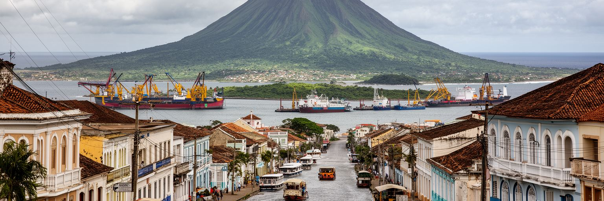
マラボの現代経済は、ギニア湾の沖合油田と天然ガス開発を抜きに語れません。赤道ギニアは一九九〇年代以降、石油収入で急速に国家財政を拡大し、マラボには国際企業、サービス業、建設、物流、ホテル、行政関連の仕事が集まりました。港は輸入食品、建材、機械、燃料、生活物資を受け入れ、空港は技術者、役人、企業関係者の移動を支えます。一方で、資源経済は都市に安定だけをもたらすわけではありません。油田の成熟、価格変動、外資依存、技能の偏りは、雇用と公共投資を不安定にします。高い収入を生む部門がある一方、日常の市場、小売、清掃、修理、交通、家事労働の所得は大きく違います。輸入依存が強い島では、為替、港湾費用、燃料価格が食料や住宅費に跳ね返ります。港湾経済を広げるには、単に資源を積み出すだけでなく、倉庫、冷蔵、修理、船舶サービス、職業訓練、中小企業金融を育てる必要があります。マラボの労働市場は、石油ガスの収入を生活の厚みに変えられるかどうかで評価されます。資源都市ほど、資源後の仕事を早く準備することが重要です。港で働く人、通関を待つ商人、修理工、食堂の従業員まで含めて見ると、資源産業は海上施設だけでなく街の細かな仕事に波及しています。その波及を地元企業と若い技能者へ広げられるかが、次の産業政策になります。島内で特に重要です。
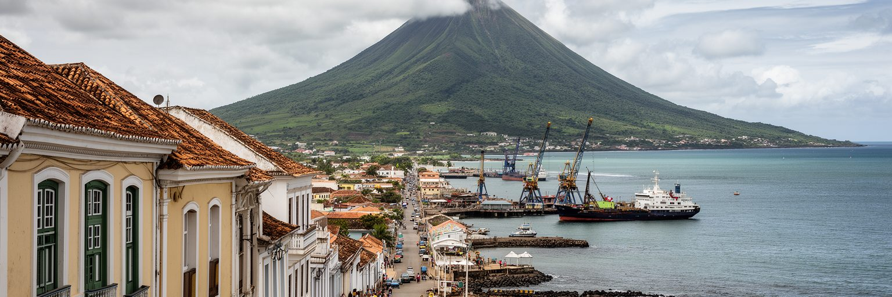
マラボはかつてサンタ・イサベルと呼ばれ、スペイン植民地支配の行政拠点として発展しました。旧市街には、教会、広場、行政建築、港へ向かう街路など、植民地都市の骨格が今も残ります。赤道ギニアはアフリカで例外的なスペイン語公用国であり、街の看板、学校、役所、礼拝、メディアにもその歴史が表れます。ただし、植民地遺産は単なる美しい建物ではありません。強制労働、プランテーション、宣教、教育、土地利用、島の先住民として暮らしてきたブビ社会との関係を含む、複雑な記憶です。観光で旧市街を歩くときは、色のあるファサードや大聖堂だけでなく、その建築が誰の権力を示し、誰の労働で維持されたのかを考える必要があります。独立後のマラボは、植民地期の空間を国家の首都として使い直し、広場や官庁を新しい権力の舞台にしました。街路名、記念碑、建物の用途は時代ごとに変わり、都市は記憶の上書きを続けています。スペイン語、ピチン、ブビ語、ファン語、フランス語、ポルトガル語が混じる日常は、植民地の残響だけでは説明できない現代の多層性を示します。マラボの遺産は保存対象にとどまらず、歴史を問い直す教材でもあります。老朽化した建物を直す資金、所有権の整理、住民の住み続ける権利を合わせて考えなければ、保存は外向きの飾りになります。使われている建物として残すことが、都市の記憶を生活へつなぐ方法です。
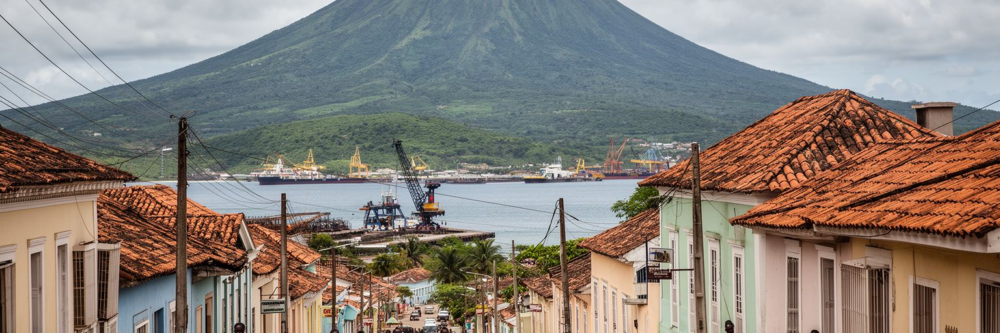
ビオコ島の歴史を支えてきたブビの社会は、マラボを理解するうえで欠かせません。都市が植民地行政、独立国家の首都、石油ガスの拠点へ変わるなかで、島の土地、村、言語、祭礼、親族関係は強い圧力を受けてきました。同時に、赤道ギニア本土のファン系住民、ナイジェリアやカメルーンからの商人や労働者、スペイン語圏や石油関連の外国人も都市を形作っています。マラボは小さな市域に多様な出身を抱えるため、市場、学校、教会、職場、賃貸住宅では言葉と慣習の調整が日常的に起こります。移住者は港湾労働、商店、建設、家事、飲食、交通で都市を支えますが、身分、雇用の安定、住宅、医療へのアクセスに不安を抱えることもあります。ブビ社会にとっては、都市化が土地と文化の継承を難しくする一方、教育や行政参加の機会も開きます。文化を観光向けの衣装や踊りだけで扱うと、こうした生活の交渉は見えません。家族の葬儀、婚礼、村への帰省、食材の選び方、子どもにどの言葉を教えるかという選択に、都市の民族関係が表れます。マラボの社会は、島の先住性と国家規模の移動が重なる場所です。互いの歴史を尊重できる制度と近所付き合いが、都市の安定を支えます。学校でどの言語が使われ、役所で誰が説明を受けやすく、市場で信用がどう作られるかは、統計に出にくい都市の公平性です。多様な住民が同じ公共空間を使えることが、旧首都の成熟を示します。
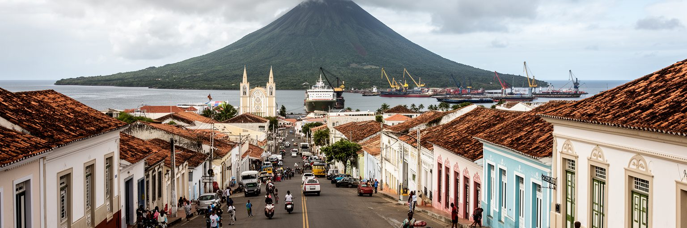
マラボの宗教風景では、カトリック教会の存在感が強く見えます。大聖堂、学校、修道会、祝祭日は、スペイン植民地期から続く制度と都市生活を結びつけています。しかし、信仰の実際は教会建築だけでは捉えきれません。家庭の祈り、葬儀、結婚式、村の儀礼、イスラム系住民の礼拝、プロテスタント系教会、伝統的な信仰が、家族と近所の時間を作ります。都市では、宗教施設が礼拝を行う場にとどまらず、教育、相談、相互扶助、移住者の居場所として働きます。石油収入で都市が変わっても、病気、失業、進学、出産、親族の死といった場面で、人々は信仰共同体に支えを求めます。大きな祝祭は通りの音、服装、食事、交通にも影響し、都市の季節感を作ります。一方で、宗教は権威や道徳をめぐる緊張を生むこともあります。若者の暮らし、女性の役割、婚姻、葬送費用、政治との距離をめぐって、家族と教会の期待が重なるからです。マラボの宗教生活を見ると、植民地遺産、島の文化、移住者のネットワークが祈りの形を通じて結ばれていることが分かります。観光客にとって大聖堂は名所ですが、住民にとって信仰は生活を整える日々の実務でもあります。雨の多い季節でも礼拝や葬儀は近所を動かし、親族は食事や交通費を分担します。祈りの場は、社会保障が十分でない部分を補う共同体の装置にもなっています。
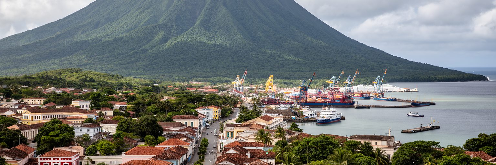
マラボの背後には、ビオコ島の火山地形と濃い緑があります。バシレ山へ向かう道は、港の湿った空気から山地の雲、森、村落へ都市の視界を広げます。熱帯モンスーン気候のマラボでは、雨季が長く、海からの湿気と山の地形が降雨を強めます。強い雨は森を豊かにし、滝や緑の景観を作りますが、道路の傷み、排水、斜面災害、感染症、住宅の湿気という課題も生みます。乾季は比較的短く、海風があるとはいえ、暑さと湿度は屋外労働や通学に負担をかけます。火山島の自然は観光資源であり、水源、気候調整、生物多様性の基盤でもあります。森林が失われると、土砂流出や水質悪化が都市へ戻ってきます。マラボの都市計画では、港湾や道路整備だけでなく、山地、渓流、海岸、排水路を一体で扱う必要があります。観光客がバシレ山や島の海岸を訪れるときも、自然は背景ではなく、都市の暮らしを支える仕組みとして理解できます。気候変動で雨の降り方が不安定になれば、低地の浸水、道路維持、食料輸送、保健対策はさらに重要になります。マラボは海と山が近い美しい都市ですが、その近さゆえに自然管理の失敗もすぐ生活へ届きます。涼しい木陰、雨を逃がす側溝、斜面の住宅規制、海岸のごみ管理は、景観整備ではなく生活安全の政策です。島の自然を守ることは、都市の医療費や修繕費を抑えることにもつながります。
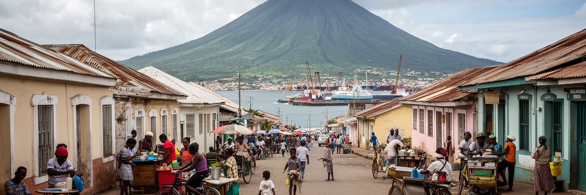
マラボの日常は、港へ向かう車、学校の制服、市場の売り声、官庁へ行く人、ホテルで働く人、雨に濡れる道路、海風のある夕方でできています。市域は大きくありませんが、生活の負担は単純ではありません。食料や建材の多くを輸入に頼る島では、港の滞り、燃料費、為替、通関、物流コストが物価に反映されます。石油ガス部門の高い所得がある一方、商店、交通、清掃、家事労働、非公式の小商いで暮らす世帯には価格上昇が重くのしかかります。住宅は中心部の古い建物、新しい集合住宅、周辺の拡大地区が混じり、水道、電力、排水、廃棄物処理、道路照明の質に差があります。公共交通が限られると、通勤や通学はタクシー、乗合、徒歩に頼り、雨季には移動時間が読みにくくなります。行政都市だったマラボには学校や病院もありますが、所得や居住地によって利用しやすさは異なります。住民が都市を評価する基準は、華やかな建築よりも、用事を済ませる距離、窓口の分かりやすさ、病院へ行ける交通、子どもが安全に歩ける道です。旧首都としての格式を生活の便利さへ変えるには、基本サービスを近所単位で整える地道な投資が必要です。港町の豊かさは、食卓と住まいに届いて初めて実感されます。とくに雨季には、舗装の穴、排水不良、停電、蚊の発生が日々の予定を変えます。都市サービスの質は、災害時だけでなく、買い物や通学の小さな移動をどれだけ軽くするかで測られます。
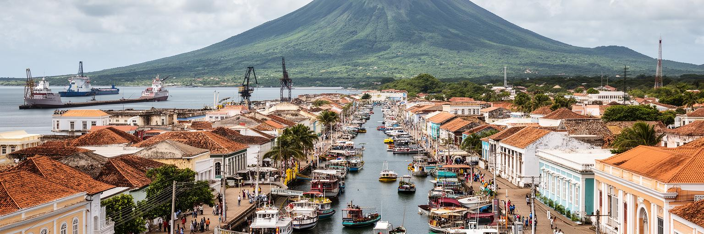
マラボ観光は、大聖堂や旧市街の建築、港の眺め、独立広場、海岸道路、バシレ山方面の森、ルバへ向かう島内の風景を組み合わせると奥行きが出ます。大都市型の観光地ではありませんが、スペイン語圏アフリカの珍しい都市文化、火山島の自然、石油時代の都市変化を一度に見られる場所です。旧市街の建物は写真映えしますが、保存状態や利用状況には差があり、文化財としての維持と日常利用を両立させる工夫が求められます。観光の質を高めるには、徒歩で回れる案内、建築やブビ社会の歴史を説明する資料、港湾や行政区域の安全な動線、地元の飲食店や市場へ収入が届く仕組みが必要です。バシレ山や島の自然へ足を延ばす場合は、道路、気象、保護区の規則、地域住民への配慮が欠かせません。マラボは観光客を大量に消費する都市ではなく、短い滞在でも歴史と地形を丁寧に読む都市です。首都移転後は、旧首都という肩書きを文化観光に生かす可能性があります。行政の記憶、植民地建築、石油ガスの現代史、島の自然をつなげれば、単なる通過地ではない滞在の理由が生まれます。旅人にとっての魅力は、派手さよりも、海と山の近さ、言語の独自性、国家の変化を街角で感じられる点にあります。観光収入を広げるには、ガイド、運転手、清掃、保存修理、飲食、小売が連動する必要があります。訪問者が写真だけで去らず、地元の説明を聞き、店を使い、島の歴史を学ぶ流れを作ることが大切です。
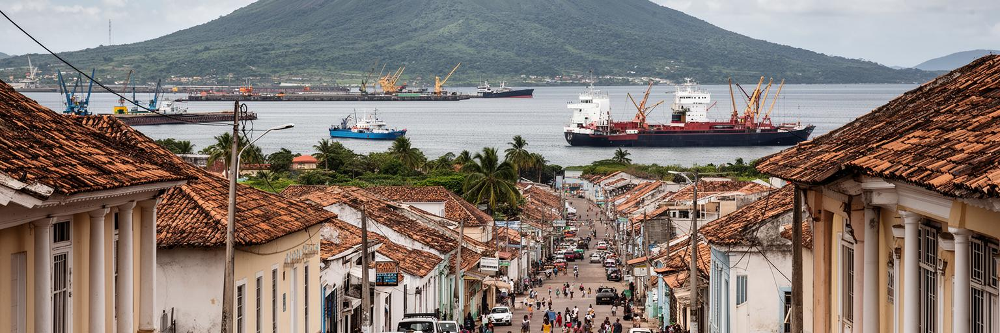
マラボの社会課題は、資源国の首都だった都市らしく、豊かさの見え方と暮らしの実感の差に表れます。石油ガス収入は道路、公共建築、ホテル、国際企業の活動を生みましたが、すべての住民に同じ形で届くわけではありません。若者の雇用、技能訓練、非公式労働、住宅費、輸入食品の価格、医療費、教育の質は、家計の安定を左右します。外国企業や行政に近い仕事は高い所得を得やすい一方、港周辺の小商い、清掃、運転、家事、建設の日雇いでは不安定さが残ります。政治的な自由、情報へのアクセス、公共投資の透明性、移住者の権利も都市の信頼を測る要素です。島という地理は、物資の調達と人の移動を難しくし、困ったときに本土の家族や別都市へ頼る選択も制限します。雨季の排水、廃棄物、蚊媒介感染症、海岸部の浸水は、所得の低い地区ほど影響を受けやすいです。社会政策は大規模な建築より目立ちませんが、保健所、学校、職業訓練、公共交通、住民窓口、女性と子どもの安全を整えることで都市の不平等を和らげます。マラボが旧首都から成熟した島嶼都市へ進むには、資源収入の記憶を、住民が使える制度と仕事へ変えることが欠かせません。都市の強さは、外から見える富ではなく、弱い立場の人が暮らし続けられる条件に表れます。若い世代が石油部門以外でも将来を描ける教育と起業環境を持てるかは、格差を固定しないための核心です。透明な行政と身近な公共サービスが信頼を積み直します。
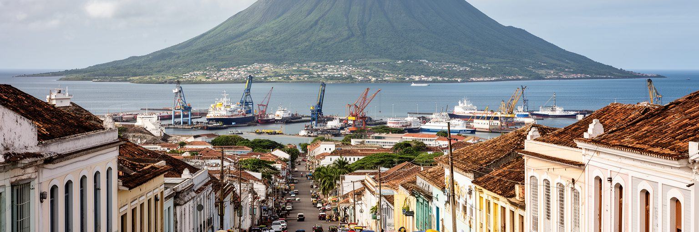
マラボは人口規模だけで見れば大都市ではありません。それでも世界都市の地図に置く価値があるのは、島の旧首都、ギニア湾の資源経済、スペイン語圏アフリカ、植民地遺産、火山島の自然、首都移転という多くの論点が重なるからです。ニューヨークやロンドンのような金融中枢ではありませんが、沖合油田と国家財政、港湾物流と輸入生活、旧官庁街と新首都、ブビ社会と移住者、宗教と植民地教育が、狭い市域の中で交差します。二〇二六年の首都移転は、マラボを過去の都市にしたのではなく、旧首都がどのように役割を再編するかという新しい問いを与えました。島の中心として行政、医療、教育、港湾、観光を担い続けるなら、都市は国家の記憶を保ちながら、地域の生活拠点として成熟できます。世界の都市を読むとき、経済規模や人口だけを基準にすると、マラボのような場所は周辺に置かれます。しかし、小さな都市ほど、国家の選択、資源の偏り、植民地の記憶、気候リスク、生活サービスの不足が濃く現れます。マラボを読むことは、首都とは何か、島から国家を統治するとは何か、資源収入を暮らしへ変えるとは何かを考えることです。海風のある旧市街には、世界経済と住民の日常が意外な近さで並んでいます。巨大な人口や金融市場を持たなくても、地政学と生活の結び目になる都市は世界を理解する手がかりになります。マラボの小ささは弱点だけでなく、複数の問題が近距離で見える読解の強みでもあります。